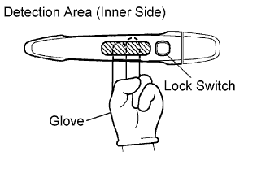
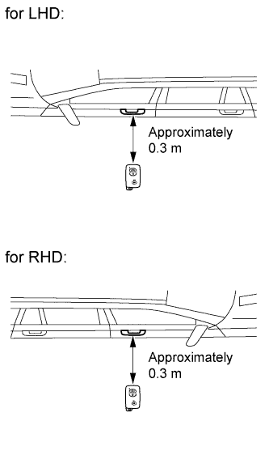
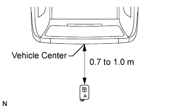
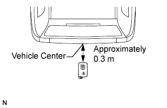

ENTRY AND START SYSTEM (for Entry Function) > OPERATION CHECK |
| ENTRY AND START SYSTEM OPERATION INSPECTION |
Check the entry unlock function.
Use the wireless lock operation to lock the doors. With the key in your possession, touch a door outside handle (touch sensor) and check that the door unlocks.
Check the entry unlock operation detection area.
Step 1: Hold the key at the same height as the door outside handle (approximately 0.8 m (2.62 ft.)). Pay attention to the direction of the key in the illustration.
 |
Step 2: Check that when the key is brought within 0.7 to 1.0 m (2.30 to 3.28 ft.) of the vehicle, the system enters unlock standby mode.
 |
Step 3: After the system enters unlock standby mode, touch the sensor on the outside handle within 3 seconds. Check that the door unlocks.
Step 4: Repeat step 2 and step 3 for the remaining doors.
Step 5: Inspect the door electrical key oscillator response sensitivity. Wear protective gloves, set the system to unlock standby mode, and check that touching the inner side of the outside handle (the highlighted area in the illustration) with your finger causes the door to unlock.
Step 6: Repeat step 5 for the remaining doors*.
Check the entry lock function.
 |
Step 1: Close all of the vehicle doors. With the key in your possession outside of the vehicle, check that pressing the lock switch locks the doors.
Step 2: Repeat step 1 for the remaining doors.
Check the entry back door unlatch function.
Close all the doors and the back door. With the key in your possession, check that pressing the back door opener switch unlocks all the doors and unlatches the back door.
 |
Inspect the detection area of the entry back door open operation. Hold the key at the same height as the back door opener switch (approximately 0.8 m (2.62 ft.)) and aligned with the center of the rear of the vehicle. Pay attention to the direction of the key shown in the illustration. Check that the when the key is brought within 0.7 to 1.0 m (2.30 to 3.28 ft.) of the vehicle, pressing the back door opener switch unlocks all the doors and unlatches the back door.
Check the entry back door lock function.
 |
Step 1: Close all of the vehicle doors. With the key in your possession outside of the vehicle, check that pressing the back door lock switch locks all the doors.
Check the entry ignition function.
When the engine control system is off: With the key in your possession and the brake pedal depressed, check that pressing the engine switch releases the steering wheel lock and starts the engine control system.
When the engine control system is running: With the key in your possession, check that pressing the engine switch stops the engine control system and activates the steering wheel lock.
 |
Inspect the detection area of the entry ignition operation (front seat). Pay attention to the direction of the key in the illustration. When the key is in either of the 2 locations in the illustration, check that the engine control system can start.
 |
Inspect the detection area of the entry ignition operation (rear 1 seat). Pay attention to the direction of the key in the illustration. When the key is in either of the 2 locations in the illustration, check that the engine control system can start.
 |
Inspect the detection area of the entry ignition operation (rear 2 seat). Pay attention to the direction of the key in the illustration. When the key is in either of the 2 locations in the illustration, check that the engine control system can start.
Check the key lock-in prevention function.
Place the key in the vehicle with all doors locked. Check that, when all the doors are locked through keyless operation (move the lock knob to the lock position and then close the door), the wireless buzzer sounds* for seconds and all the doors are unlocked.
Check the key cancel function.
While the engine switch is on (IG), check that the back door opener switch is the only switch in the entry and start system that can be operated.
While the key cancel function (entry and start system cancel function) is on, check that all functions in the entry and start system cannot be operated.
Check the answer-back function (hazard warning light flashing and buzzer sounding).
| Entry Operation | Hazard Warning Light | Buzzer* |
| Entry Door Lock | Flashes once | Sounds once |
| Entry Door Unlock | Flashes twice | Sounds twice |
| Entry Back Door Open | Flashes twice | Sounds twice |
Check that the key reminder warning buzzer sounds.
Carry the key in the vehicle and close the driver side door. Then turn the engine switch off or on (ACC).
Open the driver side door and check that the buzzer sounds intermittently.
Check that the key reminder warning buzzer stops.
When the buzzer is sounding, check that the buzzer stops sounding if either of the following are performed: